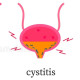

Cystitis
Rx
1.Tab TMP/SMX 800/160 q12h
Or Tab Ciprofloxacin 500mg q12h
Or Tab Nitrofurantoin 100mg q8h
2.Tab Phenazopiridin N=10 q6h ( for dysuria)
If pregnant :
1.Cap Cephalexin 500mg q6h
Or Tab Nitrofurantoin 100mg q8h
نکات :
1- سیستیت در خانم ها شایع است و معمولا نیاز به بررسی ندارد. و طول دوره ی درمان در سیستیت ساده و noncomplicated سه روز است .
2- طول دوره ی درمان در خانم های حامله 7 روز است.
3- در تمام آقایان با علایم سیستیت نیاز به بررسی بیشتر و درخواست U/A و U/C دارد.
4- قرص فنازوپریدین سبب تغییر رنگ ادرار می شود و بیشتر از سه روز نباید مصرف شود.
✳️Dysuria
✳️Urinary urgency and frequency
✳️A sensation of bladder fullness or lower abdominal discomfort
✳️Suprapubic tenderness
✳️Flank pain and costovertebral angle tenderness (may be present in cystitis but suggest upper UTI)
✳️Bloody urine
✳️Fevers, chills, and malaise (may be noted in patients with cystitis, but more frequently associated with upper UTI)
1️⃣ ولووواژینیت
2️⃣ اورتریت تحریکی
3️⃣ سنگ مجاری ادراری
4️⃣ اورتریت ناشی از STD
5️⃣ جسم خارجی در واژن
PID 6️⃣
7️⃣ اپیدیدیمیت
8️⃣ پروستاتیت
BPH 9️⃣
🔟 تنگی مجرا
1️⃣1️⃣ سیفلیس
1️⃣2️⃣ کنسر مثانه
1️⃣3️⃣ پیلونفریت
1️⃣4️⃣ آپاندیسیت
1️⃣5️⃣ دیورتیکولیت
IBD 1️⃣6️⃣
Herpes Simplex 1️⃣7️⃣
1️⃣8️⃣ هرنی استرانگوله
تصویری برای این نسخه موجود نیست.